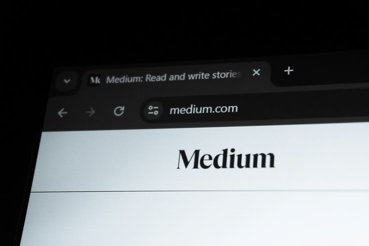

VISIT MEDIUM ↗About the Website
Medium is an online publishing platform where people can read and share different kinds of stories, articles, poems, opinions, and ideas. It has many topics to explore, which makes it a good place for people who enjoy reading and discovering new perspectives.
What I like about Medium is that there are many different writers and topics available on the site. I can find articles about things that interest me while also discovering subjects that I have never thought about before. It is a simple website, but there is always something new to read and learn from.
How I Found This Website
I first remembered coming across a TikTok video that suggested different articles and websites that were worth reading. One of the sites mentioned in the video was Medium, so I became curious and decided to check it out for myself.
At first, I only planned to read one article because I was simply curious about what the website had to offer. However, after reading the article, I found myself interested in exploring more of the stories and topics available on the site. I started discovering different writers and reading articles whenever I had free time.
Eventually, I started to enjoy visiting Medium because it gives me something interesting to read whenever I want to relax or learn something new. What started as a random recommendation from a TikTok video eventually became one of the websites I often visit.